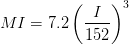
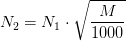

Amostragem Carvão
Created Tuesday 05 May 2015
•Rank é o teor de carbono (C) de um carvão mineral.
- A ordem (maior a menor) seria: antracito>betuminoso>sub-betuminoso>linhito>turfa.
- A região sul do Brasil produzem 99,4% do carvão nacional.
- O carvão minerado (ROM) é beneficiado para obter carvão energético. O beneficiamento reduz o teor de cinzas e aumenta o teor de material carbonoso (junto com o PCI).
- Uma produção típica de uma mina de carvão está entre 1M e 2.5M t/ano.
- O laboratório de energia e meio ambiente (LEMA/UFSC-análise imediata, porosidade e reatividade com CO2) e o laboratorio de processamento mineral (LAPROM/UFRGS) podem realizar as analises de carvão.
- Para uma amostragem previa, o tamanho da amostra bruta de carvão foi de 20 kg.
- Análise imediata inclui 4 parâmetros: umidade, matéria volátil, carbono fixo e cinzas. usando um termogravimetro.
- Análise elementar envolve a determinação das frações em peso de C, H, N, S, e O, conhecido o teor de cinzas. serve para determinar o poder calorífico (inferior e superior) do carvão.
- O teor de cloro total e diretamente associado a problemas de formação de escoria e corrosão nos equipamentos.
- A reatividade com CO2 é expresa como a pérdida de massa em função do tempo a 50% de conversão, em atmosfera de CO2.
Informações baseadas na norma técnica brasileira NBR 8291
- Define-se o tamanho da maior partícula (I) como a medida da abertura (em mm) da maior malha (padrão), que retém até (máximo) 5% da massa total da amostra.
- A massa do incremento (quantidade unitaria de material coletado em kg) é dada pelas seguintes equações:
- Tamanho da maior partícula menor que //152 mm://
- Tamanho de maior partícula igual o maior que 152 mm:

- O número e tamanho mínimo de incrementos para lotes até 1000t é determinada na tabela a seguir:
- Para lotes acima de 1000t, o número mínimo de incrementos é calculada com a seguinte formula:

onde M é a massa do lote em toneladas, e N1 é o número de incrementos na tabela.
- A massa da amostra bruta e a reunião dos incrementos.
Condições de amostragem
- identificação da amostra:
- nome do carvão.
- tipo de carvão.
- fornecedor.
- lote e meio de transporte.
- número de amostra
- local de amostragem.
- data e horário de amostragem
- A variação entre as massas dos incrementos deve ser menor a 20%.
- A amostragem deve ser feita em pontos de carregamento ou descarga de material.
- Amostragem de material em repouso deve ser evitada, se possivel.
- Amostragem em correias transportadoras em movimento: o coletor deve estar próximo à superficie da correia para coletar tambem os finos.
verificação
- É feita considerando os resultados para o teor de cinzas e por duplicado (de dez amostras).